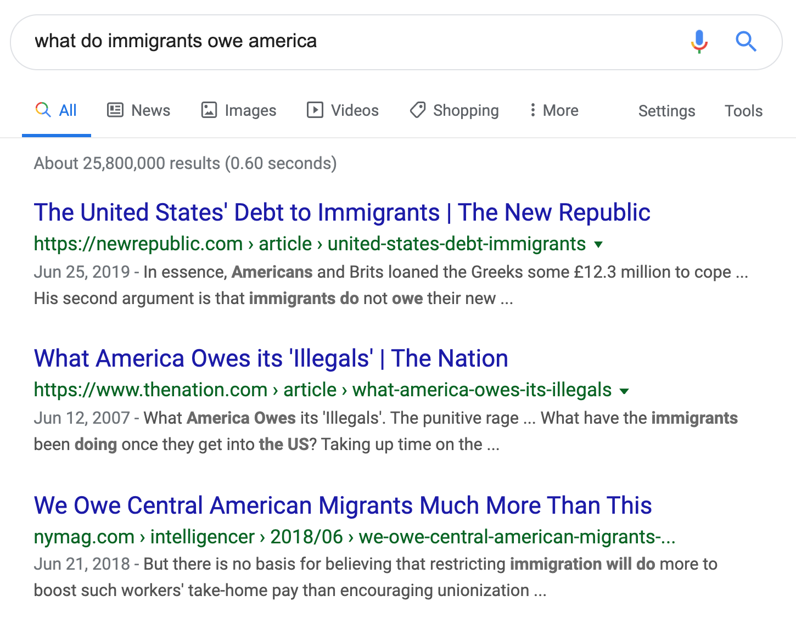

home | en
Here are some interesting Google results:  I had to go to the fourth page to find something about what immigrants owe America instead of what America owes immigrants. As the largest wave of immigration in American history crests, politically correct[1] silence on these sorts of questions is corroding our democracy. The "certain frustration" Barack Obama describes feeling when "forced to use a translator to communicate with the guy fixing my car" in The Audacity of Hope has no outlet in our present politics other than Trumpian nativism.
Immigrants who stay in the United States and become citizens owe America three things:
How much of one's identity does one owe their new country? I'll answer this by exploring two vastly different notions of American identity. The first is too watered down while the second is excessive. Then, like Goldilocks tasting the just-right bowl of porridge, you'll get to hear my just-right idea of how much of their identity immigrants owe America.
Juliet Lapidos learned she was American when she was five years old: "I was sitting at a Japanese restaurant a few blocks from my parents' apartment in Manhattan. Maybe I'd parroted some comment about what Americans are like that I'd heard one of my immigrant family members make, and my mother felt the need to set the record straight. I'm not sure. But I remember that my mother got a funny look on her face and said, in French, 'You know, you're American, too.'"
Lapidos reads like a white nationalist straw man: a cosmopolitan Jew living in Manhattan so unpatriotic it took her five years to learn her nationality. But her story acknowledges an important truth: those of us hyphenated-Americans who aren't completely satisfied with this country sometimes distance ourselves from it in our criticism.
Lapidos sees this as one of the best parts of America: "it occurs to me that my ability to only tentatively embrace America is a privilege that makes America great...This is a country where immigrants can come and decide what it is to be American, for themselves." This one-foot-in, one-foot-out model of being American makes me profoundly uncomfortable.
Immigrants shouldn't have it both ways, being American when we see things we like and distancing ourselves when we don't. Everyone has things they like and things they don't like about their country. The dislikes ought to draw immigrants into the rich tradition of patriotic dissent rather than leading us to cede American-ness to the native born.
Further, Lapidos' notion of being American codes rural whiteness as authentic American-ness and urban multiculturalism as less so. It's true that jet-setting New York cosmopolitans probably have less invested in Americana than ranchers in Oklahoma. But most New Yorkers are not jet-setters: they are normal people taking part in one of the more interesting slices of American life.
So Lapidos' idea of American identity isn't enough for me. There's a second idea I want to consider.
"Bloody" Breathitt County in eastern Kentucky earned its nickname after becoming the only county in the United States to fill its World War I draft quota with volunteers. In Hillbilly Elegy, Breathitt County native J.D. Vance describes this as "the factoid about Breathitt that I remember best" and "the truth that everyone around me ensured I knew."
Vance elegizes a rural lifestyle that feels abandoned by American popular culture: "To understand the significance of this cultural detachment, you must appreciate that much of my family's, my neighborhood's, and my community's identity derives from our love of country."
I don't follow Kentucky politics, but I'd bet Breathitt County voters were completely behind Trump when he told several congresswomen to go back where they came from[2]. While Trump's attacks were racist[3], there's a legitimate, good faith sentiment lurking behind them. It would not at all be racist for someone from a community like Vance's to ask immigrants to adopt their new counry the way one would adopt a child, to criticize it with unconditional love instead of Lapidos' sporadic disownment or Omar's scorched-earth radicalism.
I don't agree with this view because I think it unnecessarily holds immigrants to a higher standard than native-born Americans. But it's a legitimate viewpoint with a lot of purchase among poor white Americans that only gets air in right-wing circles.
Anyway, here's the just-right amount of identity that immigrants owe America: enough to keep native-born Americans from turning fascist, which is probably closer to Lapidos than Breathitt County. But honestly, I don't think this is the job of individual immigrants. It's really a numbers thing. I'm convinced by David Frum's article "If Liberals Won’t Enforce Borders, Fascists Will" that how much immigrants identify with America is a function of the foreign-born population.
[1] To be fair, the phrasing of the question probably has as much to do with the results as political correctness—there's an An Coulter column that popped up about the U.S. owing illegal immigrants nothing.
[2] Breathitt County voted for Democrats in 24 straight presidential elections before Obama curiously lost by 10 points in 2008.
[3] By racist I mean "discriminating on the basis of race." Trump told congresswomen who were born in New York, Michigan, and Ohio to go back where they came from, and he wouldn't have said that if they had been white. (Conor Friedersdorf is completely right when he says we should clearly define "racist" when we use the term.)
12/4/19